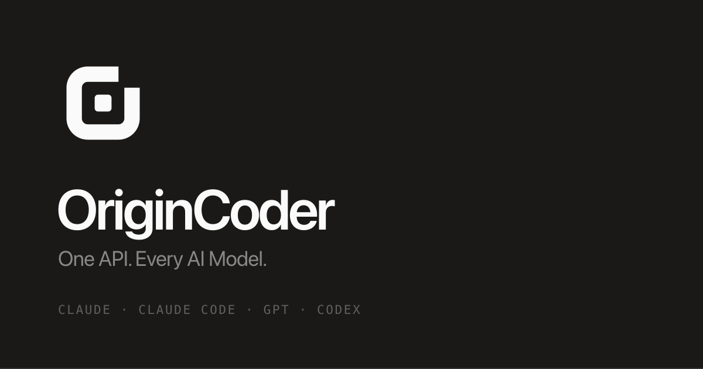

方框，右上角开口
AI 产品的标记清一色是圆的，换成圆角方反而最跳出同类，气质也更接近数据库、终端这类基建工具。 断口开在右上角而不是边中间——框还是完整的框，不会读成"缺了一块"。 整个标记只有一个颜色——方核靠留白和框分开，本来就不需要靠色差区分。
主标记
A · 描边 84 · 核 92 · 圆角 74小尺寸
favicon 用的是加粗简化稿，不是主标记缩小组合锁定
字重 600 · 字距 -3.6 · 单色
社交卡片
1200 × 630 · 近黑底 · 左对齐
底色
zinc 中性色阶 · 全站无彩，主按钮用反色#09090b
zinc-950
zinc-950
#18181b
zinc-900
zinc-900
#27272a
zinc-800
zinc-800
#71717a
zinc-500
zinc-500
#e4e4e7
zinc-200
zinc-200
#fafafa
zinc-50
zinc-50
#3f3f46
zinc-700
zinc-700
改了什么
全部在工作区，未提交frontend/public/ 共 10 个文件 |
logo.svg / logo-dark.svg / logo-v2.png / logo-v2-dark.png / favicon.svg / favicon-32 · 16.png / favicon.ico / apple-touch-icon.png / og-image.png |
tailwind.config.js |
primary 由靛蓝换成中性墨色阶（浅端做底色描边，500 起进墨色，主按钮为近黑），dark / accent 由 slate 换成 zinc。三个色阶合计被引用约 4700 次，全站一次到位 |
views/HomeView.vue |
设计令牌换成 zinc 中性体系；hero 的靛蓝辉光改为中性 --hero-glow；字号整体上一档（hero 上限 64→84，区块标题 38→52，正文 13.5→15）；区块间距 104→128；标记是单色的，所以 brandLogo 按主题切换深浅两个文件 |
index.html |
favicon 指向新的 favicon.svg（内嵌 prefers-color-scheme，浏览器标签栏跟随系统主题）；theme-color 拆成明暗两条 |
utils/seo.ts |
上一轮的改动保留：社交卡片图与 organization logo 分开，避免 1200×630 横图被覆盖成方形 logo |